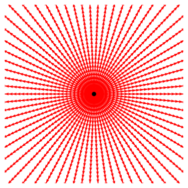
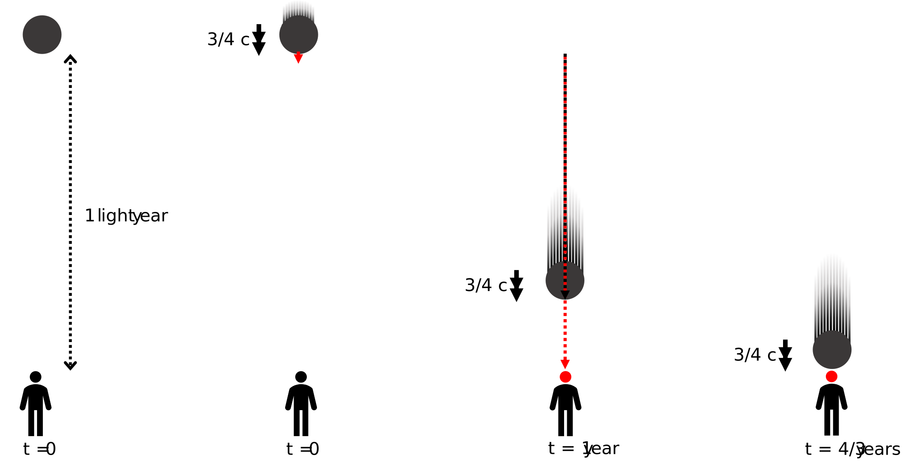
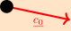

\(\nextSection\)
To make sense of special relativity, we will first look at the classical understanding of the world.
Then, we will see how we must change these classical laws of physics to account for light's constant speed relative to all observers.
Which in turn will lead to many interesting consequences.
The chapter begins with an overview of the core concepts to help us understand why we need special relativity and what it means, leaving the mathematical details and deeper insights for the following chapters.
This chapter's concepts will establish the mathematical framework for later chapters, using physical objects, such as moving trucks on roads, to represent the different perspectives of various observers.
Whereas, in the mathematical chapters, we will use coordinate axes to represent the different perspectives (frames of reference).
Later, you will see the parallels between this conceptual overview and the mathematical chapters.
This chapter will provide an overview of all the required concepts for special relativity, building up the needed knowledge bit by bit, starting with our classical understanding of how perspectives (frames of reference) work and showing how our understanding must change if we are to allow all observers to view light as moving at the same constant speed.
Classical Addition of Velocities
Imagine a truck, carrying a cannon, is moving at 20 meters per second, and the cannon fires a ball at 100 meters per second relative to the truck.
Classically, we add the truck and the ball's speed, to find the ball moves at 120 meters per second relative to the road.
So, in classical physics, velocities are directly added.
The ball relative to the road would move at the speed of the ball relative to the truck plus the truck's speed relative to the road, as shown in Figure (\ref{fig: truck cannonball}).
However, this classical understanding is just a very good approximation for objects in our everyday life that we are used to seeing, which are moving much slower than the speed of light (roughly 300 000 000 meters per second), but we will get to this later.
For now, in the following sections, we will explain what an inertial reference frame is and how this works in the classical context so that you can see more clearly the differences between classical and special relativity.
Addition of cannonball and truck's velocities. A diagram, showing the speed of a cannonball from two different perspectives, (top) is from the truck's perspective with the cannon at rest and the road moving backwards, the cannonball is shot and moves forward. The Figure (bottom) is from the road's perspective, with the truck moving relative to it. When the cannonball is shot, it looks like it is moving forward faster, with the previous cannonball's speed combined with the speed of the cannon that it was shot from. *** add labels of ball, truck and road speed or There could be a background object like a stop sign/person that is blurred in the top and not blurred in the bottom.
Inertial Reference Frame
A reference frame is a grid of coordinates that we can overlay space with, so that we can state with respect to it where and when an event occurs.
If this grid is stationary or moving at a constant velocity, it is called an inertial reference frame.
In the previous truck example, we could associate a reference frame with the truck, by introducing a grid of coordinates that is stationary relative to the truck and, hence, moving along with it.
This perspective, fixed to the truck, is the truck's frame of reference.
A second grid of coordinates, stationary relative to the road, can also be introduced, representing the road's reference frame.
These grids of coordinates are shown from the road's reference frame in Figure (\ref{fig: Reference Frames}).
Reference frames of a truck and road. A diagram, showing the reference frame of a truck as a grid of coordinates that is moving with the truck relative to the road's reference frame shown as a stationary dashed gray grid of coordinates.
An inertial frame of reference is a reference frame that is not being accelerated.
You can tell if you are being accelerated as you will feel a force.
For example, in an accelerating car, you will feel the seat being accelerated into you, with your body slightly lagging behind in the acceleration.
This principle is used in accelerometers to measure acceleration, as shown in Figure (\ref{fig: spring boxes}).
Inertial vs non-inertial frames. A diagram, showing a ball attached to the walls of a box by springs, with the ball centered in the box in the inertial frame, with no acceleration (left), and in a non-inertial frame (right) where the box is now accelerating to the right, The ball lags behind as the box accelerates.
We will now look at how movement changes in classical relativity when we change between these inertial frames.
Classical Inertial Reference Frames
To see how to swap between reference frames in special relativity, we will first have to introduce the classical approach.
To illustrate this, we will look at a setup of two rats on a treadmill with a platform as shown in Figure (\ref{fig: 3d conveyor belt}), with three rocks hanging above the platform, which are at rest relative to the room.
The two frames of reference will be the treadmill's platform and the room in which the treadmill is in.
Both rats start under the same rock.
One rat runs to a rock positioned in the forward direction of the treadmill.
The other rat runs to an equally distanced rock to the side.
After this, they return to the starting rock.
Here, the platform can be seen as the medium in which the rats move.
Both rats travel at the same constant speed relative to the platform, with the platform either at rest or at a slower speed than the rat's motion to allow them to get to the rocks.
Rats on a treadmill. A diagram, showing a 3d view of a treadmill platform, with two rats and three hanging rocks, with arrows representing the rats moving from a starting rock to the other two equally distanced rocks, with the paths perpendicular to each other.
If the platform is at rest, they will return to the starting rock simultaneously.
But if the treadmill is turned on and the platform is moving, the rats will also have to work against the movement of the platform to get to the rocks.
This will lead to different distances the rats have to travel relative to the platform, and as a result, the rats get back to the starting rock at different times.
Figure (\ref{fig: treadmill}) shows what the direction of movement of the rats and rocks look like in each of the reference frames when the platform is moving.
Room's reference frame.
From the room's perspective, the platform is moving backwards.
The rat that is moving along the direction of the treadmill's motion will have impedance to its movement from the backwards pull of the platform.
But after it turns around, it will have a boost from the platform to return to the starting rock.
Meanwhile, the sideways-moving rat will have to move sideways and balance out the platform's backwards pull to keep its movement in the direction of the hanging rocks.
This gives different lengths of paths depending on the reference frame, as shown in Figure (\ref{fig: treadmill}).
The rats in the platform's reference frame, move with the same speed for all the paths, represented by the arrows.
Whereas, in the room's reference frame, we have a slower constant speed of the sideways-moving rat and two different speeds for the forward and backward paths of the other rat.
This leads to different times for the rats to return to the starting rock.
The rats here use the medium of the treadmill's platform to move, and similarly, it was thought that light needed a medium, called the aether, to travel through space.
If there was this medium, we could test how fast it moved relative to Earth by finding the difference between the return times of light emitted in two perpendicular directions, just as in the treadmill example.
So, next, we will look at the notion of a universal medium referred to as the aether and whether we can have the same frame swapping when it comes to light traveling in two different frames of reference, as we did in this section.
The Aether
In the theory electromagnetism from the late 1800s, it was believed that light was a wave and, therefore, would need a medium that filled the vacuum of space for it to travel through, called "the luminiferous aether", and that light traveled at a constant speed relative to this aether, like how the rats in the previous section moved at a constant speed relative to the medium of the treadmill's platform.
It was from the theory of electromagnetism and the experiments performed from it, that showed that light should have a constant speed, atleast relative to this aether, but it was yet to be known that light would actually have a constant speed relative to all things.
If the aether existed, the Earth would be moving through it, illustrated in Figure (\ref{fig: Aether}).
The earth and the aether. A diagram showing the proposed aether's and Earth's movement relative to each other.
So, an experimental setup by Michelson and Morley, shown in Figure (\ref{fig: Michelson_morley}), called an interferometer, was devised to measure Earth's movement through the aether \cite{EtherExperiment}, by measuring how it affected the return times of light emitted in different directions, as observed in Earth's reference frame.
It did this by splitting a single light beam into two perpendicular paths that are then reflected back to be recombined and sent toward a light detector.
By rotating a platform that the setup is on, the two light paths could be aligned, one parallel and the other perpendicular to the Earth's motion through the presumed aether.
They reasoned that if the speed of light was constant with respect to the proposed aether, just like in the rat experiment from the previous section, the split light beams would recombine at different times.
From the previous section's system of rats on a treadmill, we can see that the treadmill's platform is analogous to the aether, and the rats are analogous to the light.
Both have the room where these experiments are done as the other inertial reference frame.
Experiment to detect the aether. A diagram showing the Michelson-Morley experiment, we can take the part of the paths between the beam splitter and two mirrors to be analogous to the case of the paths in the previous section of the rat and treadmill system.
However, when Michelson and Morley performed the experiment, they found no difference in travel time to the detector for both paths, indicating that there was no difference in the speed of light in any direction in Earth's reference frame.
Hence, light's speed is not dependent on the supposed aether.
This null result seriously discredited the aether theories.
It ultimately led to the proposal by Einstein in 1905 that the speed of light (in a vacuum) is a universal constant and is independent of the motion of the observer or source.
To allow for us to have this universal speed of light (in a vacuum), it will require us to change our ideas of how time and positions are perceived by different observers.
Speed of Light
The experiments within a vaccum, showed light does not just travel at a constant velocity relative to the proposed medium (the aether), and instead travels at a constant velocity regardless of the motion of the reference frame.
The observed speed of light is independent of how fast the source and receiver of that light are moving in the frame, as shown with a moving truck's headlights in Figure (\ref{fig: truck torch}).
Light does move slower in objects such as glass, but this is due to the interactions between the light and the material, impeding the movement of light.
Light itself moves extremely fast compared to any other everyday speeds we are used to (roughly 300 000 000 meters per second; it can travel the world's diameter in the blink of an eye).
This is why we do not notice any delay in the light arrriving from the things we see in everyday life, and we assume everything to be located where we are currently seeing it, though we should remember that there is this delay.
For example, the light we currently see from the sun was emitted eight minutes ago for it to reach us now, and the further an object is located from us, the further back in time we are currently seeing it because of this delay.
When we look at the same truck setup as in Figure (\ref{fig: truck cannonball}), but now have it in a vacuum, where the cannon firing a cannonball is swapped for headlights emitting light, we will find the same speed of light when measured relative to the truck or the road, but how can this be true?
Emitted light in different frames. A diagram, showing light emitted from a truck in two different reference frames, with the emitted light having the same speed in each frame, though with different frequencies and energies due to the Doppler effect, which will be explained later.
For this to be true, we need a new way of thinking about velocity addition.
This is because the velocities of objects must be added in a way that is consistent with the requirement that the speed of light is constant but also gives the approximate classical addition at speeds of objects at much less than the speed of light, like how we observed in the situation with the cannon and truck, shown in Figure (\ref{fig: truck cannonball}).
Since the speed of the light depends only on the units of time and positions, the only way to correct for this is to have the measured positions and times of objects transform differently when swapping between reference frames than the classical way.
This is what we will talk about next.
For the curious, it was the \href{https://scienceready.com.au/pages/determination-of-speed-of-light}{experiment by Ole Rømer} that showed that light traveled at a finite speed rather than being instantaneously emitted and received.
Position and Time
Time Dilation
Consider a simple clock, as shown in Figure (\ref{fig: truck clock}), made of a light pulse moving back and forth vertically between two mirrors on a moving truck, one on the truck's floor and the other on the roof directly above it.
Each tick of the clock is defined as the time it takes for the light to travel from one mirror to the other and back.
For an observer in the truck, they will see the light go straight up and down between the mirrors, but an observer stationary relative to the road will see not just the light traveling up and down but also with the direction of the truck to allow it to travel back and forth between the mirrors.
Light clock on a truck. A diagram, showing a clock consisting of light being reflected between the floor and roof of a truck to keep time, in the truck's frame (top), and in the road's frame with the truck moving (bottom).
Given that the distance traveled by the light in the frame with the truck moving is longer, and from the previous sections we know that the speed of light is the same for both reference frames, to keep the speed of light invariant: the clock itself must tick slower in moving objects.
How much slower the time is passing in the moving truck relative to the road observer can be solved using the ratio of the lengths of the paths in each frame as shown in Figure (\ref{fig: truck clock}), as this is the same ratio as the time between the ticks.
Importantly, this time dilation phenomenon isn't limited to light clocks; it applies universally to all types of clocks.
If you were to play a movie on the truck, it would take a longer time for it to play through from start to finish for an observer watching it from the road's reference frame.
An observer on the road and in the truck experience time at different rates.
This is not just an illusion, it is physical reality.
The closer the truck goes to the speed of light, the more significant the difference in how fast the road frame's time flows relative to the truck frame's time.
This can be seen as an increasingly longer horizontal stretch in the path taken for the light from the perspective of someone standing still on the road, with the time between each tick approaching infinity as the speed of the truck approaches the speed of light.
You may ask about the possibility that the distance between the floor and roof of the truck becoming smaller the faster the truck is moving relative to the road, to allow for the light clock to tick at the same speed, and to get rid of the need for the time dilation, but that would actually lead to contradictions which will be shown later in figure (\ref{fig: width contraction}).
Now, if we instead had two trucks moving at the same speed relative to the road but in opposite directions.
Each truck would see its light moving vertically up and down with the other truck's light moving a longer diagonal path.
Hence, each truck perceives the other truck's clock ticking slower.
An observer in the road's reference frame would see both trucks move at the same speed and, hence, their diagonal paths having the same length, giving the same passage of time between ticks for both trucks.
That is, The slowing of time of moving objects is the same regardless of its relative direction of motion, only the relative speed changes the travelled distance of the ticking light.
This concept is confusing and difficult to visualize, but it will get easier with practice.
For now, though, we will continue building up the concepts of special relativity.
Simultaneity
Imagine a truck in its rest frame, with a light bulb in the middle and mirrors on the front and back walls.
If the light bulb gives off a pulse of light, the light will travel from the center of the truck to reach the mirrors simultaneously and back to reach the light bulb also simultaneously.
An observer on the road watching the truck drive past will see the light bulb simultaneously emit light in both directions and simultaneously return to the bulb again.
However, the light reflects off each wall's mirrors at different times in the road's frame to do this, as shown in Figure (\ref{fig: truck simultaneity}).
This is because the speed of light is the same for both directions, but the truck is moving, meaning the back of the truck is moving towards where the bulb was when the light pulse was emitted, making the distance traveled shorter.
The light travels a longer distance to the front wall due to the wall moving away from where it was emitted.
Because of this, the observer on the road will see the light hit the mirrors at different times.
Simultaneity of events in different frames. A diagram showing how two events of light reaching the two walls of the truck are simultaneous in one frame but happening at different times in another, due to truck's movement in the second frame and the speed of light remaining the same.
Consequently, times of events, such as when the light reaches either mirror, are different for observers in different reference frames.
There is no one true order of events.
For example, an observer in a faster-moving vehicle moving in the opposite direction would see the light reach the front wall first.
However, for all observers, the light will return to the central light bulb simultaneously.
If two events happen in the same position simultaneously, then this happens simultaneously in all frames of reference.
This means the light returns to the center of the light bulb simultaneously in each frame.
A note here is that we are talking about when the events actually happen in each frame and not when the light from these events reaches the observer, which is later due to the time it takes the light from an event to travel to the observer for them to see it.
Also, I have left out any mention of length contraction of the truck, which will be introduced in the next section, and why it needs to be equal in both directions from the lightbulb for the light to simultaneously return to the light bulb.
Length Contraction
Consider a truck, in its rest frame carrying a square container.
If a light bulb at the square container's center emits light in the two horizontal directions and the two vertical directions it will bounce off the mirrored sides of the truck and return to the center simultaneously.
We require that in the moving frame, they also all return to the center simultaneously, as multiple events that happen at a single point simultaneously in one frame, must happen simultaneously in all other frames.
The light reflects off the walls at different locations, so the order of reflections in time will depend upon the relative observer, as described in the previous section.
The time between the light being emitted and absorbed from the light bulb is the dilated time, that was described in section (\ref{Subsect: Time Dilation}).
To achieve this simultaneity in the return of the light to the bulb, the total length of the path of light in each of the four directions must be the same, as lights speed is the same in all directions.
We can work out the length of the up and downward path from the time dilation section (\ref{Subsect: Time Dilation}), and this is the length the path needs to be in the horizontal directions as well.
The paths can only have this length if the truck is contracted in the direction of its motion, to allow for the light to be relected from the walls at the required positions for these path lengths.
The amount of contraction is same in both directions.
The exact amount of the contraction can be worked geometrically, and it turns out that the ratio of the increase in the amount of time that passes before the light is reabsorbed is inversely proportional to the amount the truck is contracted in the direction of its movement.
That is, if in a moving frame the time is dilated so that the light clock takes twice as long between ticks, then the length of the moving lorry becomes half of its length when at rest.
This is shown in the following figure.
Length contraction of moving truck. A diagram, showing a truck with a square container in its rest frame (top), emitting light from a central bulb in the four directions, with all light being reflected by the mirrored sides back to the center, as shown in red. In the second frame with the truck now moving (bottom), we see the truck's length contracted to allow all paths to be the same length.
We now know that moving objects must shrink in the direction they move to allow for a consistent speed of light in each frame.
But this srinking is not noticeable when objects move much slower than light speed.
If you are unsatisfied with this, the next section will reason the need for length contraction in another way using three accelerating cars.
But first we will look at the reason we did not consider any change in sizes of moving objects in the directions perpendicular to an object's movement.
If we look at the possibility that a moving object contracts in the direction perpendicular to the direction of its movement, we find out that this leads to contradictions, as shown in figure (\ref{fig: width contraction}).
As it allows for the possibility that a moving objects size in the perpendicular direction is smaller than a container when being observed in a containers rest frame but is bigger than its container in the object's frame.
Which is impossible as this would break the container just becuase you decided to viewed the object from a different reference frame.
Paradox of height and width contraction. A diagram showing why there must not be a contraction in the perpendicular direction to the frame's relative motion. The top Figure shows a ball and cannon at rest. The bottom figures show the cannon ball being fired in the frame of the cannon (left), where the moving ball has a contracted width, and (right) in the frame of the ball, where the canon is now moving and has a contract width, with the ball at rest being the same size. Both frames would contradict each other if there was a change in the width of moving objects, as the walls of the cannon and the surface of the ball would overlap in one frame and have a gap between them in the other. So, we require no size change perpendicular to the object's movement.
In the previous section we had in the frame with the truck moving, that the emitted light reaches the top and bottom of the square container at the same time.
But the times it reachs the left and right walls are non-simulataneous, and it is this difference in timings that allows the truck to contract in the direction of movement without the contradictions that are present when we look at the possibility of contraction in the perpendicular direction to the movement.
Another Illustration of Length Contraction
Length contraction between three accelerating cars. A diagram, illustrating an experiment with three cars initially at rest and equally spaced on a road. The middle car emits light that reaches the front and back cars simultaneously, triggering all cars to accelerate for a predetermined time. Now another light is emitted from the middle car after the acceleration has finished, the road observer sees this second light pulse reach the back car first, as it is moving towards where the light had been emitted, this causes it to begin accelerating before the front car. This results in the cars being closer together after acceleration, demonstrating Lorentz length contraction. However, to the car observer, the distance between the cars remains unchanged from the initial distances.
Suppose we have three equally distanced cars at rest on the road, as shown in Figure (\ref{fig: cars}).
If the middle car sends out a pulse of light, it will reach the front and back car at the same time for the road observer and the observers in the car. When it reaches them both, all the cars accelerate for a predetermined fixed amount of time to the same speed.
Following this acceleration period, the cars have maintained equal spacing relative to both the car observers and the observer on the road.
As for all observers, the light reached the front and back cars at the same time.
Now, suppose we do this a second time, with the middle car releasing another pulse.
In this case, we have in the frame of the observers in the cars: again, with the front and back drivers receiving the pulses simultaneously, meaning that they will start accelerating simultaneously.
After the acceleration has finished, the distances between the cars will be the same for the car observers.
But for the road observer, they see the back car receive the signal first, as that car is moving towards the point where the light pulse was emitted, and the front car is moving away from it.
This would mean the back car would start accelerating first to get to the final constant velocity and get closer to the front car before the front car begins to accelerate to that same final speed that the back car had already reached.
This results in the cars being closer together after the acceleration.
The observers in the car and the road observer disagree with what the distances between the cars are.
This contraction of length between cars, in the road's frame in which the cars are moving, is called Lorentz length contraction, which means that objects that are moving faster become shorter, and the distances between the objects also become shorter.
Doppler Effect
If we have a light source at rest, emitting circular pulses of light with equal times between each pulse, we will have concentric circular pulses in this frame.
But, if we move to a frame where the source is now moving to the right, each circular pulse is emitted from a different position.
Due to the source moving, each pulse will be emitted closer to the right-hand side of the previous pulses, creating a bunching up of the pulses (increase in frequency) in the direction of movement and a spreading out (decrease in frequency) of the pulses in the opposite direction.
This also happens in the classical version of the Doppler effect.
For example, you will notice that an ambulance or police car sounds different when driving towards or away from you due to the bunching up and spreading out of the sound waves in the direction and opposite direction of the moving vehicle.
However, in special relativity, we also must take the time dilation of the pulses into account, as there will be a longer time between each subsequential pulse.
This is due to objects moving relative to an observer and therefore having their perceived time moving more slowly.
This is called the second order Doppler effect most notably seen in optical clocks.
This has a decreasing effect on the frequency in all directions.
However, directly in the direction of movement of the source, this is outweighed by the frequency increase from the previous bunching-up effect.
Since the energy of the light is proportional to the frequency, it is also increased in the direction of motion of the source due to the Doppler effects and decreased in the opposite direction.
Spherical waves from a moving source. A diagram showing (left) a central source at rest emitting several circular pulses of light with equal time between each pulse, (right) the same source in a frame where it is now moving and emitting circular pulses of light, but each subsequential pulse is emitted from a different position as the source is moving, marked by a faded dot. *** could be done in latex instead
One thing not mentioned yet in this picture so far is how the light is also affected by what is called the aberration, which is the change in the angular distribution of the light at each part of the spherical pulses, which will be explained in the next section.
Aberration
Here, we will talk about what the Doppler effect in the previous section has yet to show, which is the effect on the angular distribution of the light in each part of the spherical pulses.
We will show that there is a higher concentration of light in the direction of the source's movement, as shown in Figure (\ref{fig: truck aberrated}).
With the help of the length contraction section (\ref{subsect: Length Contraction}), Consider a truck with a spherical mirrored container, with a central bulb emitting light in all directions.
In the rest frame all light reaches the spherical wall simultaneously and returns to the center bulb simultaneously as well.
Then in the moving frame, we have the spherical container length contracted and the light moving at the same speed but reflecting off the same parts of the walls but at different times, and then returning to the center bulb simultaneously.
For this to be true, the directions of the light must be aberrated (have their direction of propagation changed) in the way shown in the diagram to allow for this simultaneous return to the bulb.
Pulse emitted Pulse absorbed
Pulse emitted
From the diagrams, you can see how light's direction of propagation is changed when emitted or absorbed by a moving source relative to its rest frame, this is called relativistic aberration. The faster the source is moving, the more the direction of each part of the light pulse is changed/aberrated.
If the speed of a source was to approach the speed of light, all emitted light's propagation direction would approach the direction of movement of the source.
If the source could theoretically reach the speed of light, all light would be emitted in the direction of the source but also move at the same speed.
That is, the source would move with the emitted light, and it would not leave the vicinity of the source.
The rate at which it emits the light would also tend to zero.
If a photon theoretically had mass and its influence of the gravitational force moved at the speed of light, then we would not be able to feel any gravitational effects from this theoretical photon with mass outside its vicinity.
This is due to all its gravitational field being propagated in the direction of its movement and at the same speed as the photon.
Another note is that in astrophysics, it must be taken into account that the Earth's view of the universe is distorted by aberration when looking through telescopes, with the aberrational effect depending on where it is in its rotation around the sun.
We will look at the combination of the Doppler effect and aberration next.
Relativistic Beaming
When the Doppler effect and relativistic aberration are taken together, it is known as relativistic beaming.
If we have a source in its rest frame emitting a spherical pulse of light with evenly distributed angles.
Then in a second frame with the source now moving, the doppler effect has the spherical pulse's wavelength bunched up in the direction of movement (giving a change in the color of the light), with the aberrational effect also giving the angular spread of the light at a higher concentration in the direction of the movement of the source, as shown in figures (\ref{fig: Relativistic Beaming}).
rest frame Moving frame
rest frame
rest frame Moving frame
rest frame For astrophysics, we need to consider this beaming when looking at distant stars that are moving relative to us so that we can accurately calculate their brightness and the spectrum of light that they are emitting, along with some other things.
We also need to consider that the position we are currently seeing the stars in is their past position due to the delay in light traveling to us on Earth, which is referred to as the retarded position.
We will talk about this next.
A Source's Retarded Vector Field of Light
We can make a vector field plot, which is a plot of arrows that shows the position and direction of light in space.
So if we have a source in its rest frame that continually emits pulses of light with a constant time between each pulse, we get what is shown in Figure (\ref{fig: vector field of light source rest frame}).
If we wanted to know what this light vector field looked like in a frame with the source moving, we would need to take into account that the position the source emitted each pulse from is its past position (retarded position).
We also have the dilated time between pulses in this moving frame, so using these and the beaming effect from the previous section we get the light's vector field as shown in Figure (\ref{fig: vector field of light source primed frame}).
From this, we can work out the distribution and, hence, the concentration of the light for any moving source relative to when it is at rest.
If you look closely at the diagrams, you will see the aberrated rings of all the pulses, all with different points from which they were emitted, with them being more compact in the direction of the source's movement.

Source's Rest Frame Primed frame Primed frame
Source's Rest Frame In particle physics, the photon is the particle that composes light.
It is the carrier of the electromagnetic force between charges.
So how the light's propagation transforms when swapping between frames is necessary to understand electromagnetism, and how the magnetic field comes about for non stationary sources.
The diagram of the moving source shows you where the source and light currently are.
But, if you were an observer at a particular position in the vector field, you would see the source at its retarded position and not where it currently is, as the light has to travel to you before you see it.
This will be used in the next section to show that you can perceive things moving faster than light, even if they are not.
Velocity
We looked at how velocities at the speed of light change between different frames of reference, that is, how their directions of propagation are rotated (aberrated).
However, for objects moving at velocities slower than that of light, its speed will change in addition to to the direction being transformed when swaping between frames.
This is due to us needing the relativistic transform to tend towards the classical transform as we look at smaller and smaller speeds of objects.
To understand the general velocity transformation, some mathematical detail is needed, so we will need to brush over this for now, and instead look at how the perceived speeds of objects can be more than that of light, even if they are moving slower.
Perceived vs Actual Speed
Imagine that a ball one light year away (the distance it takes light to travel in a year) is fired directly towards you, as shown in Figure (\ref{fig: perceived vs actual speed}).
It will take one year for the first light from when the ball starts moving to reach you.
If the ball moves at three-quarters of the speed of light, it will hit you in four-thirds of a year (a year and four months) after it is fired.
The last light from the ball will reach you just as the ball hits you.
As you perceive it, the time between the first and last light from the moving ball is four months.
During those four months, you will see the ball start at its initial position and travel a distance of one light-year.
So, to you, the ball appears to have been moving three times faster than light.
This is just how it appears to the observer due to the delay in the light signal, giving the latency in how the system is observed.

Perceived faster than light movement. A diagram demonstrating the perceived speed of a ball vs its actual speed ... the red arrow represents the light being emitted from when the ball starts moving from its position one light year away...
This shows how important it is to consider the delay in the light from objects when observing relativistic systems.
This view is called the delayed/retarded view, meaning what we see now are objects in their past positions, and the further things are from us, the further into the past we are currently seeing them.
Summary
A key early concept was that light traveled through a medium called the luminiferous aether.
The Michelson-Morley experiment attempted to measure Earth's motion relative to this aether.
Surprisingly, no difference was found in the speed of light regardless of direction through this proposed aether.
This conflicted with the intuitive addition of velocities, discredited the aether theory, and led Einstein to propose light's constant speed in all inertial frames of reference as a fundamental principle.
Special relativity emerged from this insight that light's speed in a vacuum is constant for all observers, regardless of the light source's speed relative to each observer.
This required rethinking the concepts of time intervals and distances between points to accommodate light's fixed speed.
This led to the requirement that a clock moving relative to an observer ticks slower from the observer's perspective while also being contracted in the direction of its motion.
This was shown in Figure (\ref{fig: truck clock}) and Figure (\ref{fig: full truck transform}).
The faster an object moves relative to an observer, the more its length contracts and its time dilates to the observer.
It also led to the simultaneity of events not being absolute.
For example, light emitted from the middle of a moving truck reaches the front and back walls simultaneously for an observer at rest in the truck.
But an observer standing still on the road sees the light hit both walls at different times, as shown in Figure (\ref{fig: truck simultaneity}).
There is no universal "now" at a distance-observers relate times of events differently.
It is only events that happen simultaneously at the same location that happen simultaneously in all frames of reference.
Classical physics is verified by our day to day experience, though this does not reflect the full reality, as relativistic effects only become readily noticeable at speeds close to that of light.
With the speed of light being 300 million meters per second, astronomically faster than what occurs in our daily experience.
When it comes to velocities, they combine differently than in classical physics.
However, we must ensure that the transforms reduce to the intuitive addition of velocities of classical physics at low speeds while accommodating light's constant rate in all frames of reference.
This leads to initially bizarre outcomes such as apparent faster-than-light motion emerging from how relativistic optical effects play out across distances, which is due to the delay in light signals from objects at a distance.
Nevertheless, special relativity gives a truer, more accurate picture of reality.
Due to space-time effects on wave propagation, we also have seen that the emitted light's frequencies shift (doppler effect) for a moving source, and that light is concentrated in the direction of the source's motion (aberrational effect).
Together, both intensely focus light in the direction of rapidly moving objects, giving relativistic beaming.
These effects will all be explained more fully with math in the coming chapters, along with other effects that require the math to fully understand, as well as new energy, mass, and momentum conservation laws.
We will derive everything step by step, starting with the transformation of positions and times between reference frames.
*** I could add a section about Skewing and Terrell Rotation in Special Relativity
\printbibliography[segment=\therefsegment, heading=subbibliography]
\(\nextSection\)
Now that we have learned about the concepts of special relativity, we can use them and let the mathematics begin.
Starting with classical relativity, which will give us an understanding of how to transform coordinates between reference frames.
This will give us something to compare special relativity to later, and help with our intuition.
What we learn here will be directly used in all of the following chapters, to derive more of the foundational concepts of the theory.
As everything else is all built upon this chapter, which is about how the positions and times are transformed between two inertial frames to allow the speed of light to stay constant.
In this chapter, we will start with how swapping between two inertial frames works classically.
Then using the two assumed facts, the postulates, that are used as the basis of reasoning for special relativity, we will find out how to swap between frames in special relativity, by following the train of thought that we did in the previous conceptual chapter.
By first deriving the time dilation, and length contraction equations in order to then find the full transform of the space and time coordinates between two inertial frames.
We will come across a very useful quantity which we will denote with a \({\gamma}\), this quantity will be used throughout this book to simplify equations.
After this, we will look at the transform for infinitesimal changes in distances and use this to derive how velocities and accelerations change when swapping between two inertial frames.
By the end of this chapter, you will understand the coordinate transforms conceptually and mathematically when swapping between two frames, and how to derive the velocity and acceleration transforms.
Classical Relativity
Classical (Galilean) relativity was the earlier theory of how to transform coordinates in different inertial frames.
It was based on two assumptions, which are that in each frame, you would observe the following:
\begin{itemize}
The distance between objects is the same.
Time flows at the same rate, giving the same time for all events.
\end{itemize}
Before special relativity, it was assumed that distances between two points were the same for all observers.
That is, the first observer would see a stick and measure it to be the same length as another observer who is moving relative to the first.
The other assumption is that the flow of time is the same for everyone.
That is, clocks move at the same rate for each observer and if, say, a particle was to emit light at a particular time, this light would be emitted at the same time for all observers.
For classical relativity, if we have the positions and times of a particle's motion relative to one observer in their frame, and we want to find the motion of the particle relative to a second observer who is moving at constant velocity relative to the first.
We need to know how to transform these into this second observer's frame.
That is, if we have how one observer would describe the coordinates of a particle over time relative to them and we want to now know the coordinates of the particle with respect to the other observer, we need to know how the transformation of coordinates works.
So let us see how the mathematics works for the classical coordinate system transform between two inertial observers frames, by looking at the coordinates of an event in an initial reference frame with a second inertial frame's coordinate axis moving relative to the initial frame's, illustrated in Figure (\ref{fig: simple Galilean transform derivation}):
An event in initial frame with a primed frame's axis moving relative to its axis. This shows an initial frame with its associated \(x,y,z\)-coordinate system at rest in this frame, with origin \({O}\). There is also an \(x',y',z'\)-coordinate system with origin \({O'}\) associated with the "primed" frame, at position \({\vec{OO'}}=(0,0,{v}{t})\) in the initial frame, where \({v}\) is the speed of the primed frame in the z-direction relative to the initial frame, and \({t}\) is the time in the initial frames. An event \({\vec{E}}\) in this initial frame is described by a set of spatial and time coordinates \({\mathbf{r}} = ({x},{y},{z})\) and \({t}\). We choose the time to be zero in both frames when both axes overlapped, so that \({t}\) is also the time from when they overlapped. We also show \({\vec{O'E}}\) which represents the vector from the primed axis origin to the event in the initial frame.
As shown in the diagram, we are in the initial frame with origin \({O}\) defined by coordinates \((0,0,0)\) and the primed frame is moving in the z-direction at velocity \({v}\) such that the position of the primed origin relative to the initial frame's axis is
To swap into the primed frame's coordinates, we need to recall from the previous assumptions that distances and times are conserved, and therefore the length and directions of all the vectors between \({O}\), \({O^{'}}\) and \({E}\) are the same in each frame, and time flows at the same rate (\({t'} = {t}\)), from this knowledge and Figure (\ref{fig: simple Galilean transform derivation}) we have the event's coordinates described in the primed frame by its coordinate axis as
These are the equations that define classical relativity, we can compare this to the equations of the coordinate transforms in special relativity later. They define the event's position relative to whichever frame that we are in's axis. The special relativistic equations later will look similar to these, but with an extra factor in the z-component and with the time will no longer be consistent in both frames.
We can also write the initial frame's event coordinates in terms of the primed coordinates, by rearranging the transformation equations giving the inverse transform as
So the inverse transformation, going from primed frame to original is just a matter of swapping all primed and initial coordinates and changing the sign on the frame velocity
This can be seen at time \({t} = 0\) when we have the frame's origins overlapping and there is a symmetry from here, as we have the freedom to choose either frame to be the original, as no frame is particularly special and depending which one you pick the relative velocity is either \({v}\) or-\({v}\). We will have the same rules in special relativity later on when we want to get the inverse transform.
You might have noticed that the direction of the second frame is in the upward z-direction instead of being to the right in the case of the truck diagrams from the previous chapter, this is to help us when we use spherical polar coordinates later and to help see the symmetries. But that is a couple of chapters away, for now we will look at the assumptions of special relativity and their consequences, which we will then apply to the same notion of an event that we have in the Figure (\ref{fig: simple Galilean transform derivation}).
Postulates of Special Relativity
For classical relativity, we started with two assumptions. It turns out that these assumptions need to be thrown away, as they contradict the experimental evidence that the speed of light is constant for every observer and frame. We replace them with two new assumptions, called the postulates of special relativity:
\begin{tcolorbox}
\begin{enumerate}
The speed of light in a vacuum is the same in all inertial/non-accelerating frames of reference.
The laws of physics and outcome of experiments are the same in all inertial frames of reference. If an observer in an inertial reference frame carries out an experiment, they would find the same result if they had carried it out within a different inertial frame instead.
\end{enumerate}
\end{tcolorbox}
The first postulate here will be the most important to us in deriving the transform equations of special relativity and will be used to show how time is dilated/slowed down for moving objects. The second postulate has a consequence that if events happen simultaneously at an overlapping position in one frame, then they will also happen simultaneously in an overlapping position in any other inertial frame.
We will now use these assumptions with the concept of a light clock to show the effect of length contraction.
Time Dilation
Time passes more slowly for things moving relative to you, this is called time dilation.
To explain why it happens we will use the simple concept of a light clock.
It consists of light bouncing between two mirrors.
It keeps time by measuring when light returns to the first mirror, counting it as one tick of its clock, as shown in Figure (\ref{fig: light clock}).
rest frame Moving frame
rest frame The light in the clock, takes a time \({\Delta\tau}\) in the clock's rest frame to make the return journey.
We can see from Figure (\ref{fig: light clock rest frame}) that in the rest frame, the distance the light travels to the mirror and back in this time is
where \({\Delta t{'}}\) is the time it took light to return in the moving frame and \({u}\) is the speed of the light clock, which is in the opposite direction of the movement of the primed frame relative to the rest frame, that is \({u} =-{v}\).
The distance light travels in this time is
\begin{equation}
{c}{\Delta t{'}}
\end{equation}
This is the hypotenuse of a right angled triangle formed by \({u}{\Delta t{'}}=-{v}{\Delta t{'}}\) and \(2{L}\), so we have the square of the hypotenuse equal to the square of the other two lengths:
This factor, \({\gamma}\), is used throughout special relativity to simplify equations.
We can see from the diagram and the equations, that the time for the return journey in the frame with the clock moving is longer relative to its rest frame,
We take this outcome as the time taken between two events at the same position in the moving frame takes longer than in the rest frame of the clock, due to the longer distance light must travel at the same speed.
Hence systems that are moving seem to have there time flowing slower.
One example of this, is that unstable particles that are moving faster have longer livespans before they decay.
Length Contraction
An object's size gets smaller in the direction of movement compared to when it is at rest, this is called length contraction.
To explain why it happens we will add a second perpendicular light path to previous section's experimental setup.
So there is now light moving perpendicular as well as parallel the the primed frame's movement, as shown in Figure (\ref{fig: length contraction math})
Rest frame Moving frame
Rest frame If we have a system as described in Figure (\ref{fig: length contraction math}).
Then since the light returns simultaneously in the rest frame, we need the light to also return simultaneously in the second frame.
Multiple events that happen at a single point simultaneously in one frame, must happen simultaneously at a single point in all other frames.
This is to allow for the second postulate to hold true.
The time between the light being emitted and absorbed will be the dilated time that we worked out in the previous section.
This can be seen as the sideways light path in this and the light clock's setup from previous section is the same path.
In the moving frame, to achieve this simultaneity in the return of the light to the bulb, the length of the full path of light from the central bulb to the front mirror and back (\(2 {\Delta L^{'}} = {l^{'}_1} + {l^{'}_2}\)) must be the same as the perpendicular path, due to the speed of light being the same for both paths.
We can work out the length of the sideways paths from the time dilation section, \({c}{\Delta t^{'}}\), and this is the length the total path needs to be in the forward directions as well.
We will find that the paths can only have this length, if the distance between the bulb and the front mirror is contracted in the direction of movement.
Note that there can not be a contraction in the perpendicular direction to the movement due to the paradox explained in Figure (\ref{fig: width contraction}).
In the moving frame, the pulse sent forward has a path length equal to the speed of light times the time taken for the path.
Which is also equal to the primed frame's distance between the bulb and mirror plus the distance the mirror has moved away from the point it was emitted in this time, that is
where \({u}\) is the speed that the front mirror is moving away from the point it was emitted, \({\Delta t^{'}_1}\) is the time taken to get to the mirror, and \({\Delta L^{'}}\) is the distance between the bulb and the mirror in front in the primed frame.
After reaching the mirror, the light then must travel back to the bulb a distance
Where \({\Delta t^{'}_2}\) is the time taken to return to the bulb from the front mirror, with the source moving twowards the reflected light.
Both of these give the two times as
This means that for a system moving relative to an observer, the distances for the system in the direction of movement are contracted compared to the rest frame of the object, that is
Objects and the distance between them are therefore shorter in a frame with them moving compared to in the rest frame of the objects.
With this knowledge and the last section, we can now derive the coordinate transform equations.
Position and Time Transformation
In the last two sections we have looked at the dilation between two different times at the same location and the contraction between two different positions at the same time, when we swap between frames.
Now we will use both these concepts to help us see how the combination of the time and the position coordinate, known as an event, transforms when we swap frames.
For the derivation of the coordinate transformation of an event between two inertial frames, we will be starting with the same diagram as we had in the classical relativity in Section (\ref{sect: Classical Relativity}) and apply what we have learned from the time dilation and length contraction sections so that we can be consistent with the postulates of special relativity.
This will allow us to derive the coordinate transformation equations, known as the Lorentz transformation.
An event in initial frame with a primed frame's axis moving relative to it. This shows an initial frame with its associated \(x,y,z\)-coordinate system at rest in this frame, with origin \({O}\). There is also an \(x',y',z'\)-coordinate system with origin \({O'}\) associated with the "primed" frame, at position \({\vec{OO'}}=(0,0,{v}{t})\) in the initial frame, where \({v}\) is the speed of the primed frame in the z-direction relative to the initial frame, and \({t}\) is the time in the initial frames. An event \({\vec{E}}\) in this initial frame is described by a set of spatial and time coordinates \({\mathbf{r}} = ({x},{y},{z})\) and \({t}\). We choose the time to be zero in both frames when both axes overlapped, so that \({t}\) is also the time from when they overlapped. We also show \({\vec{O'E}}\) which represents the vector from the primed origin to the event in the initial frame.
As shown in the diagram, we are in the initial frame with origin \({O}\) defined by coordinates \((0,0,0)\) and the primed frame is moving in the z-direction at velocity \({v}\) such that the position of the primed origin in the initial frame is
These are just the position coordinates of the event in the primed frame.
The primed frame's axis and coordinates are moving relative to the initial frame, so from the previous length contraction section we would have the displacement between the primed axis origin and the event in the intial frame \(\vec{O'E}\), length contracted, in the \(z\)-direction, compared to the primed position coordinates in the primed frame \({\mathbf{r}{'}}\), that is
The \(x\) and \(y\)-components are unaffected, with the paradox of it they were effected, explained in Figure (\ref{fig: width contraction}).
Rearranging for the \(z\)-component, we have
There is a symmetry between the frames because if we were originally in the primed frame we would have the initial frame moving instead at -\({v}\) in the z-direction relative to the primed frame and we could follow the above steps starting with this and the primed coordinate instead, and find the inverse transformation is the same apart from it replaces each frame's coordinates with the other and has the negative of the previous frame velocity instead.
That is
again if we want the inverse transform from primed to initial frame we can swap the primed and initial frame coordinates and put an extra minus in front of the frame velocity.
These are the equations that define special relativity, They allow us tyo find an event's position relative to whichever frame that we want to swap into's axis.
In the time transform equation the \(\frac{{v}{z}}{{c}^2}\) term is the cause of the simultaneity of events at two different positions in one inertial frame no longer being simultaneous in another inertial frame, and the \({\gamma}\) factor, is the term that causes the overall change in how fast time flows at a point relative to the initial frame.
In the spatial coordinate transform equations the the \({v}{t}\) factor is due to both axes' origins moving away from each other and the \({\gamma}\) factor is the cause of the change of lengths in the direction of the frame's movement.
We can see how points representing the coordinates in an initial frame look like in a primed frame of reference, by looking at Figure (\ref{fig: coordinate transform}).
Initial frame This diagram shows stationary points representing coordinates in the initial frame.
In the primed frame, these points are transformed to the position \({z{'}} = {\gamma} {z}\) and are now moving at speed \(-{v}\), they are transformed using the transformation equations to points that are more spread out in the primed frame, but the times they are located at each of these points are different, they have desynchronized times.
Therefore to find these points, which represent the coordinates in the initial frame, now in the primed frame at the synchronized time of \({t{'}} = 0\), we must propagate the points to that time, which ends up being \({z{'}} = \frac{{z}}{{\gamma}}\), as shown in figure (\ref{fig: coordinate transform subfig_3}).
This figure is to give you a little bit more intuition on how the coordinates and swapping between frames work.
We will later see a more natural interpretation of the coordinate transforms when we introduce the notion of retarded time in Chapter (\ref{ch: Observers Delayed Worldview}), which will give us another reason for why the time transformation is the way it is.
Transforms with Small Primed Frame Velocity
If we have the primed frame velocity much smaller than the speed of light, (\(v \ll c\)), then we have \({v}/{c}\approx 0\) and therefore \(\gamma \approx 1\).
Hence we get back the previous classical transform equations
which is the expected result, as it agrees with the everyday observations we are used to seeing at these speeds.
That is, no noticeable difference in times on clocks or lengths of moving objects.
We can see when the \(\gamma\)-factor's influence starts to become significant from Figure (\ref{fig: Gamma Factor}).
\(\boldsymbol{\gamma}\)-factor. A diagram, showing the magnitude of \(\gamma\) with increasing ratio of primed frame's speed to the speed of light, with \({\gamma}\) tending to infinity as \({v}/{c}\rightarrow 1\).
As can be seen, it is not until around when the primed frame velocity is a third of the speed of light, that it significantly differs from being equal to 1.
This is a speed unattainable to us, the only thing we can bring up close to this speed is particles, and nothing humanmade is even a 1000th the speed of light.
Space and Time Intervals
To get the velocity transform equations we will first need the equations to transform the displacement between two positions and the interval between times, then take them in the limit as the changes go to zero.
That is, when we have infinitesimal changes of coordinates.
If we want to know how the displacement between two coordinates \({\vec{R}_1} = (x_1,y_1,z_1)\) and \({\vec{R}_2} = (x_2,y_2,z_2)\) transforms, we can take the difference of the transforms of both the coordinates as follows
rearranging and replacing the difference of the first and second of each coordinate with \({\Delta}{\vec{R}} = ({\Delta}x,{\Delta}y,{\Delta}z) = (x_2-x_1,y_2-y_1,z_2-z_1)\), giving the displacement transform as
This is the same form as the original coordinate transform equations.
From these equations, we can also get the differential quantities when we take infinitesimal changes, which give the same form again, as
So when we make an infinitesimally small change in position and/or time within a frame, we know what the corresponding change is in a primed frame, we will use these to get the velocity transform equations.
As velocity at any instance is the infinitesimal change in position per infinitesimal change in time.
These will also be used later to find, invariant quantities, quantities that remain the same in each frame.
For example, the space-time interval and the energy-momentum relationship in Chapter (\ref{ch: Invariant Quantities}).
Velocity
The velocity at any instant is the infinitesimal change in position over the infinitesimal change in time \(\frac{d\vec{R}}{dt}\).
So using the infinitesimals from Equation \eqref{eq: Infintesmal interval of Coordinates}, we get the velocity in each direction as
This is used to find the velocity of anything in another frame at the corresponding primed position and time.
We will put this equation to work in a later section when we look at how the light emitted from a source particle has its velocity direction changed/aberrated and the effect this has on its intensity in all directions. Next, we will use this to get the acceleration transform.
Side note:
For those interested; The generalized velocity transform (which we will not derive here) for a frame velocity in any direction and not just the z-direction is
with \({\mathbf{v}}\) being the frame's velocity in any generalized direction.
Acceleration
To find how the acceleration (known as the 3-acceleration) of a particle transforms for observers in two different frames, we take the differential of the velocity transform in equation \eqref{eq: velocity transform} and use the differentiation rules for two generic functions \({f}\) and \({g}\): \({d(gf)} = {f} {dg} + {g} {df}\), and \({d[{{f}({g}(x))}]} = {{dg}(x)} * {df({{g}(x)})}\)
So if we know how a particle accelerates in one frame we will know its corresponding acceleration in another frame at the corresponding primed time and position.
Side note:
Again for those interested; The generalized acceleration transform (which we will not derive here) for a frame velocity in any direction and not just the z-direction is
at position \({\mathbf{r}{'}}\) and time \({t{'}}\)
This is the 3-acceleration, not to be confused with the 4-acceleration that will be mentioned in a later chapter, which is a more abstract quantity.
Summary
We derived the mathematics for the transformation of the spatial and time coordinates for classical relativity to help us understand the derivation of special relativity.
We then introduced the assumptions, known as the postulates of special relativity, which we use to derive how time slows down due to time dilation and lengths of moving objects get smaller due to length contraction.
This allowed us to derive the transformation equations, which in turn allowed us to calculate the velocity and acceleration transforms.
We were also introduced to \(\gamma\), which is a factor used throughout relativity to simplify equations.
From this chapter, we will now be able to transform from one frame into another, in special relativity.
If you have a system of particles in an initial frame and you want to transform their positions to a new frame, you need to first define where this initial axis' origin is.
You are free to choose where it is.
The primed frame's axis will overlap with this initial frame's axis at your chosen starting time, that is when you define the time as \({t}=0\) (the time of the overlap is also \({t{'}}=0\) in the primed frame).
You can now transform the positions into the primed frame.
These particles have these primed frame positions at the calculated primed frame times, these are defined in Equations \eqref{eq: Lorentz transformation}.
To transform the velocities and acceleration to these primed frame positions at the corresponding primed frame times, you can use equations \eqref{eq: acceleration transform} and \eqref{eq: velocity transform}.
An easy mistake to make is to forget that \({t}\) and \({t{'}}\) are the times from the overlap of the frame origins, in their respective frames.
This chapter shows the foundations of special relativity, but there is still more to come.
Before we go further though, we will take a look at the delayed view of the world to an observer due to the delay in light from their surrounding.
This will help us understand why we need the time transformation to be the way it is.
\printbibliography[segment=\therefsegment, heading=subbibliography]
\(\nextSection\)
Light travels extremely fast compared to other everyday speeds we are used to, roughly at 300,000,000 m/s.
In the blink of an eye, light could travel around the world twice.
We do not need to normally worry about the delay in the light signal, as the time to propagate the distances in our everyday world is extremely short, so the signal can be approximated as being instantaneous, ignoring the more complex modeling of the delayed signal.
But when it comes to particle physics or astronomy, we might be dealing with speeds close to that of light or huge distances.
For example, light has taken 152,000 years to travel from the Andromeda galaxy, so we are currently seeing this galaxy where it was and how it looked 152,000 years ago.
These past positions that we currently see are called the retarded/delayed view positions.
The topics in this chapter are not normally included in Special relativity texts.
But they are needed to get you a more full story and understanding of relativity.
They come with extra insights into the reason for why the coordinate transform equations have to be the way that they are.
As we will see when transforming retarded coordinates.
Relativistic Observers Delayed view
When looking at moving objects we see them where they were in their past positions, due to the delay in the light signal from them.
So we will look at what the transform would be if we wanted to transform this delayed view position that is called the retarded coordinate, that consists of the retarded position and retarded time of this position.
Imagine that all coordinates act like a source of emmiting light.
Let us describe a coordinate emitting a photon to an observer at the origin, showing the retarded position the observer sees the coordinate source at.
Source and observer's rest frameprimed frame
Source and observer's rest frame As shown in the diagram, if we take the rest frame of an observer and a source that emits a pulse of light from its position at \({\mathbf{r}}\) so that it is received by the observer at the origin, at time \({t} = 0\).
The retarded time the pulse of light was emitted is \({{t}_{ret}} =-\frac{\|\mathbf{r}\|}{c}\), which is the negative of the time it took for light to propagate along \({\mathbf{r}}\) to the origin.
The velocity of the light that propagated to the origin is
The source's position and retarded position are the same in the rest frame as it is not moving.
Also, the position vector and light's velocity vector are in opposite directions, The emitted time being negative flips the direction of the velocity vector here.
Now inputting the retarded position and times in the first frame into the coordinate transform we get the retarded position and time in the primed frame as
If instead we use the angle of the retarded coordinate from the z-axis, \(\theta_{ret} = \alpha - \pi\), we have that \(\cos{\alpha}=\cos{\theta_{ret}+\pi}=-\cos{\theta_{ret}}\) and therefor the retarded time is given as
With the light being received at the origin of the primed frame axis at time \({t{'}} = 0\).
The coordinate transform here for retarded coordinates is the same as normal coordiante transform, except the time transform simplfies and allows us to take the retarded time out of brackets with just the factor \(\text{Ã…}={\gamma} \left(1-\frac{v}{c} \cos{\alpha} \right) = {\gamma} \left(1 + \frac{v}{c} \cos{\theta_{ret}} \right)\) now infront of it.
This factor will also come up in the doppler effect, in aberration and when finding the flux of a field.
We will use it to simplfy equations like we did with \(\gamma\).
We will call \(\text{Ã…}\) the aberrational factor, but it is also refered to as the relativistic doppler factor.
The retarded view of the world is due to the delay in the light from the world.
So at the moment all the light that is being received by the origin is what it sees.
When we transform the retarded coordinates when swapping to another frame, the angle the light is being recieved now to the primed frames origin, which is at the same location at \({t}={t{'}}=0\), is changed, this is called the relativistic aberration of light.
This aberration will be described fully in the next chapter.
Side Note:
This retarded position is at the retarded time, if you wanted to find the position of where the source currently is, we would need to propagate this to the current time of zero of the observer, which after a bit of workingout gives
*** double check this formula:
This section here is just a visualisation of how spatial coordinates of an initial frame transform into their retarded positions in a primed frame, showing how they are spread, as shown in figure (\ref{fig: retarded coordinate transform}).
Initial frame Density of initial frame's retarded coordinates in primed frame. This shows the density of the initial frames coordinates when they are in their retarded positions in the primed frame, with \(v=0.9\), and the scale shown on the right hand side is the density.
if the initial frame is where we see everything at when we are still, then if there was another observer overlapping with us moving a \({v}\) they would see all the points distributed as they are shown in their primed frame.
Perceived Velocity
From Section (\ref{subsect: Perceived vs Actual Speed}) we seen that objects can be perceived to be going faster than light even if they are not.
Here we will show how to find the percieved speed of objects.
So if we have a moving particle positioned at \(\mathbf{r}\), in a infintesmal time \({dt}\) it will move
as shown in the diagram
Perceived velocity. Diagram showing a particle (blue) moving from \(\mathbf{r}\) by displacement of \(d\mathbf{r}=\mathbf{u}dt\) and the paths that light (red) has to travel to get to the origin from both these positions. leading to a different retarded time between the positions than the actual time difference. This gives a different percieved velocity.
The difference between the retarded times of light from each position reaching the origin is
The distances between the points is the same to the observer as the true distance between them, its just the precieved times that are different.
Therefore we can get the precieved/retarded velocity to be
For speeds of particles between zero and the speeds of light, the denominator can range between zero and two meaning that we can have perceived speeds between zero and infinity.
For something moving at the speed of light, the slowest we could precieve it, which is when its directly moving away, is \(0.5{c}\).
This section is to just show an interesting concept, that should be taken into account when making some experimental observations.
Summary
Here we introduced the retarded positions that are due to the delay in light signal to an observer, and there associated retarded times and derived the transform of these retarded coordinates to the prime frames coordinates.
The retarded coordinate transform and also the density of the transformed intial frames retarded coordinates in the primed frame were shown in figure (\ref{fig: retarded coordinate transform}) and figure (\ref{fig: Density of initial frame's retarded coordinates in primed frame}).
We then showed what the precieved velocity of an observer at the origin would be.
What we have learned here will be used when transforming a field of light pulses later in the next chapter.
\printbibliography[segment=\therefsegment, heading=subbibliography]
\(\nextSection\)
If light pulse is emmited from a resting point source in all directions in one reference frame, how will this be effected when swaping to a frame where the source is now moving.
This will be the topic of this chapter.
We will look at the velocity transform specifically for the speed of light, which will be used throughout this chapter, starting with looking at the doppler effect on the frequency of light that a source emits.
Next we will get to relativistic aberration, which is the how the angle the emitted light is propagated at, is effected.
Both of these effects together gives relativistic beaming, allowing us to transform a field of continuous pulses of light from a source in the next chapter.
But we will start with looking into the mathematics of spherical polar coordinates which will allow us to look at all of this.
The topics of relativistic aberration and beaming are not topics that are touched upon in most special relativity sources, but they are interesting and hold some important insights, that you will hopefully appreciate.
Spherical Polar Coordinates
Before we go any further with special relativity, we will need to take some time making sure we know the math needed for what comes next.
This section will be about spherical polar coordinates and its differential elements, which will be used to get what is called a surface element, and in turn find out what the solid angle is and how to derive it.
This will then lead into finding the flux of light through this solid angle element.
Which will be needed when looking at the aberration section.
I realise a lot of these terms may be new to you, but they will be explained as we go.
So lets start with how to describe a vector in terms of the Spherical Polar Coordinates, which is shown in the following figure in red:
Spherical polar coordinates. Diagram of an \(x,y,z\)-axis showing a position vector \(\mathbf{r}\) (red) with its associated spherical polar coordinates \((r,\theta,\phi)\), where \(\theta\) is the angle from the \(z\)-axis, \(\phi\) is the angle rotated around \(z\)-axis starting from the \(x\)-axis, and \(r\) is the magnitude .
As the figure shows, for a given position \(\mathbf{r}\) we have the Cartesian coordinates \(({x},{y},{z})\), but we can also write this position in terms of spherical polar coordinates \((r,\theta,\phi)\).
Where the angles from the Z-Axis and X-axis are \(\theta\) (between 0 and \(\pi\)) and \(\phi\) (between 0 and \(2\pi\)) respectively, and \({r}\) is the displacement to the position from the origin.
The position can be written using either coordinate system as follows
\begin{equation}
\bbox[#fff9cf, 10px, border-radius: 10px; border: 3px solid black]{
\mathbf{r} =
\begin{pmatrix}
x \\
y \\
z \\
\end{pmatrix}
= r
\begin{pmatrix}
\cos{\phi}\sin{\theta} \\
\sin{\phi}\sin{\theta} \\
\cos{\theta} \\
\end{pmatrix}
}
\end{equation}
The speed of light remains the same after transforming between frames, but the velocity does not, as the direction changes.
The velocity transformation in the case where the speed is that of light, \(\|u\| = {c}\), with the direction in the initial frame at an angle \(\alpha\) from the z-axis and \(\varphi\) from the x-axis, so that the velocity of light in spherical polar coordinates is
This still has the same speed of light, which can be shown by taking the magnitude of the velocity vector (that is the square root of the squares of all its elements).
However, the angle of propagation has been changed.
We will make use of the transformation of the cosine we can get from the z-component which gives
This equation shows how the angle of the emitted light changes, and will be needed in the next chapter.
Doppler Effect
When we swap between frames there is also a change in light's wavelength, It is called the doppler effect, which we will describe using the help of the following simple figure of light being emitted from a source in its rest frame and a frame that it is moving.

Rest Frame Moving Frame
Rest Frame In the rest frame of the source, if it emits a wave at the speed of light in any direction, we have the length the wave has traveled from the source in the infinitesimal time \({d\tau}\) as being
If we change to a frame where the source is now moving at velocity \({\mathbf{u}{'}}\) in the z-direction and we have the wave now emitted at an angle \(\alpha{'}\) from the z-axis, traveling a distance \({c}{dt{'}}\) in a time \({dt{'}}\), with the source moving a distance \( u{'} \cos\alpha{'} {dt{'}}\) in the direction of this emitted wave, this leads to a bunching up of the wave in the direction of the movement of the source, as the same amount of the wave has been emitted in this primed time, but the distance it has traveled from source is
we have \({dt{'}} = {\gamma} {d\tau}\), so the ratio of space the wave is taking up in that direction compared to in the rest frame is
\begin{equation}
Ratio = \frac{d\lambda{'}}{d\lambda} = {\gamma} \left(1-\dfrac{u{'}}{c} \cos\alpha{'} \right)
\end{equation}
since wavelength is inversely proportional to the frequency, and this bunching up at the front will proportionally decrease the wavelength, the frequency ratio \(\nu{'}/\nu\) is then
This gives us a formula to find out how the frequency of a moving source's emitted light differs from when it is at rest.
This is used in astronomy to determine how fast stars and galaxys are moving relative to us on earth.
Aberration in Special Relativity
A moving light source emits more of its radiation in the direction of its movement, and here we will show by how much.
If a source in its rest frame emits light evenly in all directions, then each emitted light's angle of propagation is transformed using equation \eqref{eq: velocity transform for light}.
So that the angles of the lights propagation from the z-axis can be found to be
with \(v=- u{'}\)
This is the relativistic aberration formula \cite{einstein1905electrodynamics}, it shows how the light's propagation direction transforms, shown in Figure (\ref{fig: aberrated emitted light}). To convert back we can use the inverse formula by swaping the primed and none primed notation and taking negative of \(v\) giving
rest frame If we want to see the opposite, when light is being absorbed, we can look at Figure (\ref{fig: aberrated absorbed light}) which shows what would happen in the case of incoming light from all directions.
rest frame primed frame
rest frame It can be seen from equation \eqref{eq: Cosine transform} that as a source's speed tends to the speed of light, \(u'/c\) tends to 1 and as a result, \(\cos\alpha{'}\) tends to 1.
Hence all emitted or absorbed light in the source's rest frame tends to the direction of the source's movement.
But we also have to remember that the flow of time of the moving source relative to the primed frame, will become infinitly slow, coming to a stop at the speed of light.
That is, the act of emittance of the light stalls.
For both these reasons the light would remain in the vicinity of the source.
Relativistic Beaming
Relativistic beaming is the combination of both of the two previous sections.
If we have a single pulse of light that is evenly spherically distributed, then after a certain time it will look like what is shown in the following figure, due to its aberrated emittion and Doppler effected frequency.
Rest Frame Primed frame Primed frame: synced times
Rest Frame
The pulse positions in the primed frame with their time synced with the origin are shown in figure (\ref{fig: Relativistic beaming 3}) and can be found from the transformed primed frame coordinates from figure (\ref{fig: Relativistic beaming 2}) by propagating the the light from these coordinates forward or backwards in time to be synced with the origins time of \(t{'}=0\), that is
This can be extened to multiple pulses as we will do later in the next chapter.
\section[Retarded Light Propagation in Source's Primed Frame]{Retarded Light Propagation in Source's \\ Primed Frame}
There is a delay in the time light is emitted from a source and the time it reaches a reciever, so there is a difference in where you see moving objects compared to where they currently are due to this, and if the object is moving at velocity \(\mathbf{u'}\) you see it in a previous position \(\mathbf{u'} {T}'_{ret}\) due to this, this is called its retarded position where it was at the retarded time \({T}'_{ret}\).
The time the object and the light took to propagate from the objects retarded position to where they currently are is the same, \(T'_{p}=-{T}'_{ret}\).
We can use the following figure to find the retarded position, and work out the distance \(L'_{p}=\|\mathbf{c'} {T}'_{p}\|\) it has traveled from the retarded position in terms of the positions coordinates and the objects velocity.
This is done by first finding the propagation time in terms of the observers coordinates and the objects velocity, which can be derived from the following figure:
The diagram shows a source particle moving at velocity \(\mathbf{u'} = (0,0,u')\) in the z-direction in this frame, with the particle currently at the origin with time \({t'} = 0\), the particle was at the retarded position \(-\mathbf{u'} {T}'_{p}\) shown in grey (with \({T}'_{p}\) being the propagation time of the light), the emitted light was then propagated from the particles retarded position, along \(\mathbf{c'} {T}'_{p}\) shown by red dotted line, to reach position \(\mathbf{l'}\) at \({t'} = 0\).
\begin{derivation}
The triangle that the three vectors make allow us to get the equation for the velocity of the light as
The magnitude of the lights displacement is equal to the distance the light travels in the corresponding propagation time \( c T'_{p} = \|\mathbf{c'} T'_{p}\|\). The square of this gives
with \( L=\sqrt{l_x'^2+l_y'^2+\gamma^2 l_z'^2}\).
This is the time it has taken to propagate the light from where the source was when it was emitted to reach the current position.
\end{derivation}
The propagated distance between where the light was emmited and its current position, can then be given from this derivation of \(T'_{p}\) as
this can then be used to find out how much the intensity of a field composed of spherical pulses of light from the moving source has dispated. as so we can find the density of light at a particular point in the field.
We can find the cosine of the angle from the z-axis from the z-component of the unit vector of the velocity of light that is equal to the z-component of this equation with its magnitude \(c\) removed, giving
The reason I have explained this seperate this from the next subsection, is that I want to emphasise that the gamma function \(\gamma\) has a role to play in retarded positions and times before we even get to swapping frames.
It has to be this way to allow us to swap between frames smoothly, in special relativity.
A reminder here, being that we are not changing betwen frames, we are just looking at the delay in signal that light has to get to a particular point, even though we have made use of the gamma symbol to simply the equations like we do in special relativity, we are not evoking special special relativity, but we will be looking at this when swapping between frames in the next section.
We could just as easily have said that this setup system is an initial frame and used the coordinates without the symbol to represent a primed frame (\('\)), but we have the choice to denote this as the primed frame, and this will help in a later chapter.
Emitted Light When Swapping Frame
This section is similar to what we have just done, but the emphasis here will be on swapping between frames, and will be used in the next chapter when we have continuous pulses of light in all directions from a source and want to see how this field of light transforms and what it looks like for moving sources.
Here, we will look at light being emitted from a source at rest first and then swap to a frame where the source is now moving, using the lorentz transformation of the emitted lights current locations (from \(\mathbf{r}\) to \(\mathbf{r}{'}\)), but remembering these lorentz transformed times \(t'\) are not sychronised with the sources time of zero.
To find this we need to use primed velocity of light \(\mathbf{c}{'}\) to propagate back the light from where it is at \(t'\) to were it was at the origins time of zero.
To get this position \(L'\) where the light is at the syncronised time of zero with the source, we can use the triangle formed in figure (\ref{fig: primed frame 1}), which gives \(\mathbf{L}' = (\mathbf{c}' - \mathbf{u'}) t'_p\).
The time \(t'_p\) taken for the light to propagate from the source to point \(\mathbf{L}'\) in the primed frame, is the dilated propagation time (\(t'_p = \gamma t_p\))
proper frame primed frame with moving source
proper frame As visualized in above figure.
If we have a light source particle \({s}\), in its rest frame that had emitted a pulse of light in one direction such that it propagates along \(\mathbf{c} {T}_{p}\) to its current position \(\mathbf{r}\) at time \({t} = 0\), where \(\mathbf{c}\) is the velocity of light and \({T}_{p}\) is the time it took to propagate to \(\mathbf{r}\).
Using the coordinated transform from equation \eqref{eq: Lorentz transformation} on position \(\mathbf{r}\) with time \({t} = 0\) we get
\begin{equation}
\begin{aligned}
\mathbf{r}{'} & =
\begin{pmatrix}
x \\
y \\
{\gamma} z \\
\end{pmatrix}, \\
\text{at time \ \ \ } \\
{t{'}} & =-{\gamma} \frac{{v}{z}}{{c}^2} \\
\end{aligned}
\end{equation}
The light pulse's velocity using the velocity transform from equation \eqref{eq: velocity transform for light} in Cartesian coordinates with the particle's speed in the primed frame \({v} =-{u'}\) gives the lights velocity to be
to find the position the light pulse is currently at, at time \({t{'}} = 0\), we have to rewind its time from the position \(\mathbf{r}{'}\) that it is at when using the Lorentz transform at time \({t{'}} =-{\gamma}\frac{{v}{z}}{{c}^2} = {\gamma}\frac{u' z}{{c}^2}\) taking away how much it propagated from the desynchronised time to get the current times position of the light to be (\({t{'}_{p}} =-{T{'}_{ret}}\)).
now using \( t{'}_{p} = {\gamma} {T}_{p}\) and \({T}_{p}= R / c\)
\begin{equation}
\bbox[#fff9cf, 10px, border-radius: 10px; border: 3px solid black]{
\begin{aligned}
& \mathbf{L}{'} = \dfrac{1}{\left(1 + \frac{z}{R} \dfrac{u'}{c} \right)}
\begin{pmatrix}
x \\
y \\
\frac{1}{{\gamma}} z \\
\end{pmatrix}
\\
& \text{at time \({t{'}}=0\) }
\end{aligned}
}
\end{equation}
This is the position of the light at time zero, i.e. the same time as the source which is at the origin at time zero. This equation is what we will use to transform the positions of light, when we look at light that is being continuously emmited from a source, as shown in figure (\ref{fig: full field transformation}).
\printbibliography[segment=\therefsegment, heading=subbibliography]
5. A Point Source: Continually Emitting Light Radially Outwards
\(\nextSection\)
*** - different mathematical properties of this field of light
This chapter will look at a source that continuously emits evenly distributed pulses of light radially outwards, giving in its rest frame a "field" of light that spreads out the further it is from the source.
The amount this is spread out, at a distance \(r\), is proportional to the inverse square of the distance \(1/r^2\).
The inverse square law is used to decribe how the classical forces between two masses or charges disipate with the distance between them.
How this "field" looks is shown in the first diagram in figure (\ref{fig: full field transformation}), with the second diagram in the figure showing how this "field" of light would look like in a frame with the source now moving, using equation \eqref{eq: time synced transform} to transform each part of the pulses of light.
This second frame shows the combination of the relativistic doppler and aberration effects together, which is called relativistic beaming.
The third diagram of the figure shows the rings of each pulse, the doppler effect in each direction can be seen from the ammount of spreading out or compacting of the rings in that direction, with the aberrational effect being shown on each particular ring with how the light is spread out on that ring.
Now that we have the means to transform this "field" of light, we can look at some of its physical/mathematical features/properties, looking at each feature in it rest frame and then finding out how it extends to a frame in which it is moving.
First we will look at the flux of light at each point which is a measure of the rate of flow at each position.
Then we will look at a few properties that are proportional to the square of the distance from the source in its rest frame (properties that have an inverse sqaure law), and see what these look like for frames in which the sources are now moving.
So lets start by seeing what this light looks like in each frame.
Surface Element on a Sphere and the Solid Angle
If we define a sphere with radius \(r\) we can find an infinitesimal portion of the surface of the sphere at angles \({\theta}\) and \({\phi}\) as shown on this figure:
Differential surface element on a sphere This shows a surface element on a sphere of radius \(r\) that spans from \(\theta\) to \(\theta + d\theta\) and \(\phi\) to \(\phi + d\phi\) in spherical polar coordinates, the surface element is equivalent to a rectangle with sides \(r d\theta\) and \({r}\sin\theta {d\phi}\), giving the infinitesimal surface area of \(r^2 \sin\theta \,\mathrm{d}\theta \,\mathrm{d}\phi\).
The surface element at a constant radius \({r}\), spanning from \(\theta\) to \(\theta + d\theta\) and \(\phi\) to \(\phi + d\phi\) on a spherical surface is equivalent to a rectangle with sides \({r}{dr}\) and \({r}\sin\theta {d\phi}\) giving the surface area as
This surface elements size depends on the angle from the z-axis and the distance from the origin, but if we want a quantity that only depends on the angle, we can divide the surface element by \(r^2\), this gives what is called the solid angle.
The solid angle element \(d\Omega\) is a measure of the amount of the field of view, from the origin, that the surface element covers. For the differential surface element shown in the figure we have the differential solid angle
If we were to integrate this over the whole sphere \( \int_{0}^{2\pi} \int_{0}^{\pi} \, \sin \phi \, d\theta \, d\phi\), we would get \(4\pi\), which is when the view from the origin is fully covered by the surface.
The fraction of the view from the origin that is covered by a solid angle \(\Omega\) is given by \(\Omega/ 4\pi\).
Density of Light in a Infintesmal Solid Angle from a Point Source
If we have a source at rest emitting light out in all directions we can say at certain angles \(\theta = \alpha\) and \(\phi= \varphi\) we have have a quantity of light \(Q\) emitted in the solid angle
So this solid angle encompasses a certain amount of the wavefront, this is the same amount of the wavefront that is encompassed by the coinciding aberrated differential solid angle
We can calculate this element by differentiating both sides of eq.
\eqref{eq: Cosine transform} with respect to \(\alpha\) \cite{hogg1997special}, which after a bit of work gives
now using this and \({d\varphi{'}} = {d\varphi}\) (as the angle \({\varphi}\) is always perpendicular to the motion of the particle and hence unaffected by transformation) we have the solid angle in the primed frame given as
If there is an amount of light/quantity of light \(Q\) in the solid angle element, then the density of light in the solid angle in both frames is \(Q/d\Omega\) and \(Q/d\Omega{'}\) respectively, giving the ratio of the density in the solid angle element in the primed frame relative to the rest frame as
In the sources rest frame we have the lights propagation direction being in the same direction as the position it is at relative to the coordinate axis allowing us to use \(\cos\alpha=\cos\theta = \frac{ z}{\sqrt{x^2+y^2+z^2}} = \frac{\gamma z'}{\sqrt{x'^2+y'^2+\gamma^2 z'^2}} = \frac{\gamma z'}{R}\)
with \(R=\sqrt{x'^2+y'^2+\gamma^2 z'^2}\). Giving the last equation to be
We can also write the equation in terms of the direction of the light from the z-axis in the primed frame (\(\alpha'\)), by substituting in equation \eqref{eq: Cosine transform inverse}, which gives
all three ways of writing this look very similar, which can be confusing and easily mixed up, be careful if using these.
A Moving Source's Relativistic Beaming of its emitted light
If we have a source at rest continously emitting light as shown in the first diagram in the figure below, we can find out what a moving sources field looks like by using equation \eqref{eq: time synced transform} to transform the positions of each part of the propagating light to where it is at time \(t'=0\) (the time that is sychronised with the source at the origin).
This is shown in the second diagram in the figure below, with the third diagram showing the rings of each pulse in the primed frame.
Source's Rest Frame Primed Frame Primed Frame again
Source's Rest Frame
Emitted Light's Density
will use these to get inverse square law
Scalar Density of Light
In the previous chapter of a single spherical pulse in the rest frame, we have a surface of a sphere that the pulse creates, getting bigger as it propagates outwards, with the surface area of a sphere equal to \(4 \pi r^2\).
Since there is the same amount of light in this increasing sphere and the area of this sphere's surface increases relative to the square of its radius.
We have the surface area density on this sphere being proportional to the inverse square of the radius \(1/r^2\). This is the angular/azimuthal density.
For the case of light being continuously emitted, the light is spherically symetric and is emitted from the stationary source at a constant rate, and therefore has no change in density in the direction that is radially outwards, and only a difference in the direction perpendicular to this, i.e. the angular direction, which is parralel to the spherical surface each pulse creates, giving the total scalar density of light at any point \(D\) as being proportional to the inverse square of the radius \(1/r^2\),
\begin{equation}
D = \frac{k}{r^2}
\end{equation}
where k is the proportionality constant
General Equations for Moving Source
*** look back at section 4.8 to update this to use the surface area element instead
If we have position \((x',y',z')\), we need to use the distance the light had to propagate from where it was emmited to get to that position, which is given in equation \eqref{eq: propagation distance}, to allow us to find out how much the the lights density has disipated from when it was emmited, giving the disipation to be proportional to
The doppler effect from equation \eqref{eq: Doppler Effect} also gives the change in lights density, but this time in the direction of the light's propagation relative to the rest frame as
The density of light for a moving source at any point can be seen in the following diagram
*** add diagram
Density of Light in a Vector Form
*** This is not a quantity/property that is used in physics, this was me having some fun trying something different to see if there was anything interesting I could get out of it
*** to be checked:
in spherical polar coordinates, with direction of propagation light being direction of \(r\) with the origin at the retarded emision position of the source and
I used
with \(r=\sqrt{x^2+y^2+z^2}\) and \(\rho=\sqrt{x^2+z^2}\)
General Equations for Moving Source
in direction of propagation the density is proportional to the doppler effect \( 1/ ( \gamma( 1 - u'/c \cos{\alpha'}) )\) from eq 5.4 and in each of the perpendiuclar directions the density is the square root of eq 5.3 which is \( 1/ L\)
giving
*** alpha prime in terms of z and \(L\) :
\begin{equation}
\nabla \|\mathbf{D}\| = e
\begin{pmatrix}
-\frac{x'}{L} a + f x'z' \\
-\frac{y'}{L} a + f y'z' \\
-\gamma^2\frac{z'}{L} a - f (x'^2 + y'^2)
\end{pmatrix}
\end{equation}
\begin{equation}
\|\left(\nabla \|\mathbf{D}\| \right) \| = e \sqrt{(-\frac{x'}{L} a + f x'z')^2 + (-\frac{y'}{L} a + f y'z')^2 + (\gamma^2\frac{z'}{L} a + f (x'^2 + y'^2))^2 }
\end{equation}
given the previous diagrams for source at rest emitting light continously in all directions from a point source at the origin, we from equation \eqref{eq: direction of light from moving source} have at position \(\mathbf{l'}=(l'_x,l'_y,l'_z)=(x,y,z)\) the direction of the propagating light as
with \( R=\sqrt{x'^2 + y'^2 + \gamma^2 z'^2}\).
now we will see what happens when we have an infintesmal change from an intial point \((x,y,z)\) to \((x_2,y_2,z_2)=(x+dx,y+dy,z+dz)\)
... If we want to find how quickly the direction of the lights propagation changes at a particular point \(\mathbf{R}\), we can think of the source at the origin at time zero and at a point \(\mathbf{u'} dt\) after a time \(dt\), the system at this later time is equivalent to having the origin at the second position and the stationary point now defined as \(\mathbf{R} \rightarrow \mathbf{R} - \mathbf{u} dt\). ...
Now to see the rate of change of the direction that the light propagates relative to each coordinate, by taking the partial derivative of \(\mathbf{\hat{c}}\) with respect to each coordinate
\(\|\frac{\partial \mathbf{\hat{c}}}{\partial x}\|\) these diagrams show the rate of rotation of the lights propagation direction with respect to each coordinate, but the do not show if this rate of change is in the direction of the positive or negative direction of the corresponding axis.
\(\|\frac{\partial \mathbf{\hat{c}}}{\partial t}\|\) Source at Rest ...
...
...
magnitude of the rate of change in all directions (magnitude of jacobian/...), check from first section of chapter
yo paddy this was me just messing about with mathematical properties, this is what i was talking about, turned out it was a \(1/R\) relationship not \(1/R^2\), but alas!
also the general equat ions for moving source are given too after this.
light from a stationary source:
If you have a stationary light source at the origin that is emitting light constantly in all directions then if we look at any point (x,y,z) we find that the light (which has came from the origin to that point) has the unit vector of its velocity as
\begin{equation}
\mathbf{\hat{c}} = \frac{1}{R}
\begin{pmatrix}
x \\
y \\
z
\end{pmatrix}
\end{equation}
at that point
with \(R=\sqrt{x^2 + y^2 + z^2}\).
The things in this yellow box here are just the velocity vector's partial derivative with respect to each coordinate (they are just given here to help with the velocity vector gradient matrix next)
\begin{equation}
\bbox[#fff9cf, 10px, border-radius: 10px; border: 3px solid black]
{
\begin{aligned}
\frac{\partial \mathbf{\hat{c}}}{\partial x} & =
\frac{1}{ R^3 }
\begin{pmatrix}
R^2 - x^2 \\
- x y \\
- x z
\end{pmatrix} \\
\frac{\partial \mathbf{\hat{c}}}{\partial y} & =
\frac{1}{ R^3 }
\begin{pmatrix}
- y x \\
R^2 - y^2 \\
- y z
\end{pmatrix} \\
\frac{\partial \mathbf{\hat{c}}}{\partial z} & = \frac{1}{ R^3}
\begin{pmatrix}
- z x \\
- z y \\
x^2 + y^2
\end{pmatrix} \\
\frac{\partial \mathbf{\hat{c}}}{\partial t} & =
\begin{pmatrix}
0 \\
0 \\
0
\end{pmatrix}
\end{aligned}
}
\end{equation}
the velocity vector gradient matrix of lights velocity is
\begin{equation}
J =
\begin{pmatrix}
\frac{\partial c_1}{\partial x} & \frac{\partial c_1}{\partial y} & \frac{\partial c_1}{\partial z} \\
\frac{\partial c_2}{\partial x} & \frac{\partial c_2}{\partial y} & \frac{\partial c_2}{\partial z}
\\
\frac{\partial c_3}{\partial x} & \frac{\partial c_3}{\partial y} & \frac{\partial c_3}{\partial z}
\end{pmatrix}
= \frac{1}{ R^3 }
\begin{pmatrix}
R^2 - x^2 & - y x & - z x \\
- x y & R^2 - y^2 & - z y \\
- x z & - y z & x^2 + y^2
\end{pmatrix}
= \frac{1}{ R^3 }
\begin{pmatrix}
y^2 + z^2 & -xy & -xz \\
-xy & x^2 + z^2 & -yz \\
-xz & -yz & x^2 + y^2
\end{pmatrix}
\end{equation}
which is proportional to \(1/R\), the thing i told ya about
the distance between two points on a sphere are proportianl to the angle between them and the radius, so with constant angle you get them we have it proportian to \(R\) which should be related
this does not work in spherical polar Coordinates
General Equations for moving source:
\begin{equation}
\mathbf{\hat{c}} = \frac{1}{c T_{p}}
\begin{pmatrix}
x \\
y \\
z + u' T_{p}
\end{pmatrix}
\end{equation}
with
\begin{equation}
T_{p} = \gamma^2 \frac{u'}{c^2}z + \frac{\gamma}{c} R
\end{equation}
maybe use spacetime gradient on velocity? with the velocity being \(( 0 , c_x , c_y , c_z )\) (not four velocity!) giving
gradient being \(( \delta_t , \delta_x , \delta_y , \delta_z )\)
\(\nextSection\)
Quantities that are frame-independent, i.e.
do not change when we transform between inertial reference frames, are called Lorentz invariant.
In this chapter, we will see the invariant quantity related to space-time coordinates and use this to find invariant properties associated with velocity, which will lead to the more abstract conservation relation of momentum energy and mass.
We will find a new quantity with the units of energy that has a term which approximates to the kinetic energy of a particle at low velocities and another term that suggests particles have a new type of energy, that was not previously in classical physics, that depends on the mass of a particle (mass-energy equivalence), this will all lead to a new conservation law of energy.
The reason we care about the concept of energy is that it has a conservation relation that can be used as a tool to help us make calculations and model more complex systems.
Space-Time Interval
We define a quantity called the space-time interval \(\Delta S\) between two events in a generic inertial reference frame as:
All inertial frames of reference agree on this interval as it is invariant between frames, as \(\Delta S = \Delta S{'}\), which can be shown when we sub the values from equation \eqref{eq: interval of Coordinates} into the primed version of this last equation
From here forward we will be making some jumps in logic and assertions, leading to claims of what we will call the total energy and rest mass energy, but I will try to give as much reasoning as I can for these choices in assertions.
We can see from the previous section that if a particle is moving in a particular inertial reference frame, we can define the space-time interval of its coordinates in this frame as
and if we divide by the square of the proper time that passes for the particle in this interval \({\Delta\tau}\), so that now taking the limit as the change in time in the interval goes to zero, we get an abstract invariant quantity that we will call the space-time velocity
It can be seen that this is still an invariant quantity as the speed of light is constant in all frames.
Now by multiplying both sides by \({c}^2\) and the square of the rest mass \({m}\) of the particle we have the square of an invariant quantity with the units of energy, that is equal to \({m}{c}^2\) and give the equation to be
using the Taylor expansion of \(\gamma\) on the quantity \(\gamma {m}{c}^2\), we have for the squared term on the lefthand side
*** this needs to be taylor expansion of squared term on lhs, not the none squared term
This equation's first quantity is an energy that does not depend on the speed of the particle, and only on its rest mass, we shall call this the rest mass energy, and this can be taken as a new type of energy all masses have even when at rest.
The second quantity is the classical kinetic energy formula, the rest may be seen as higher-order kinetic energy terms that are very small for \({u}\lt \lt {c}\), so this seems to be a formula for the total energy of a particle in the absence of a potential field (i.e.
no change in potential energy) with added terms which become non-negligible at larger particle speeds, we will denote this total energy \({E}\).
Taking this assertion we have
so this total energy is equal to its rest energy squared plus a second energy squared that depends on its speed, this second quantity along with the Taylor expansion of \(\gamma\) gives
which at small particle velocities is approximately \({m}{u}{c}\) with \({m}{u}\) being the classical momentum, we could assert that this whole energy is momentum in the relativistic context, i.e.
\begin{equation}
p = \gamma {m}{u}
\end{equation}
as it has the same units and is approximately the classical momentum at small particle speeds.
\begin{equation}
E_0 = {m}{c}^2
\end{equation}
This is the energy it has from its rest mass, if a particle a particle at rest was to decay into photons, the photons emitted from this would be equal to this energy.
The final energy-momentum equation is then given as
*** Outside the scope of SR, should we state that the mass is a measure of its energy content instead?
Energy-Momentum Relation For Photons
*** First associate the energy of photon E = hf then find its equivalence in mass, then sub this in, and then say momentum for the photon is then hf/c
For a Photon we have the mass equal to zero and the momentum as \(p_{light} = \frac{hf}{c}\) which is taken from quantum mechanics and the energy-momentum relation as
\begin{equation}
E ={c}p_{light} = h \nu
\end{equation}
where \({h}\) is Planks constant and \({\nu}\) is the frequency of the light.
nothing is derived here, just states what to do for a photon
Energy-Mass Equivalence
*** Imagine we have a particle at rest emitting light in all directions so that afterward it is still at rest, but in another frame we have we have this particle moving and the emitted light aberrated, but we still need the particle to remain at a constant velocity after emission.
(maybe include a rotation in the impulse/effect of light in each direction on the particle of has)
***-if we have a ball in its rest frame that emits a flash of light evenly in all directions, we will have the ball's energy decrease by the amount of energy of the emitted light, and it will remain at rest after due to the light being emitted evenly in all directions
-its kinetic energy is zero in this frame